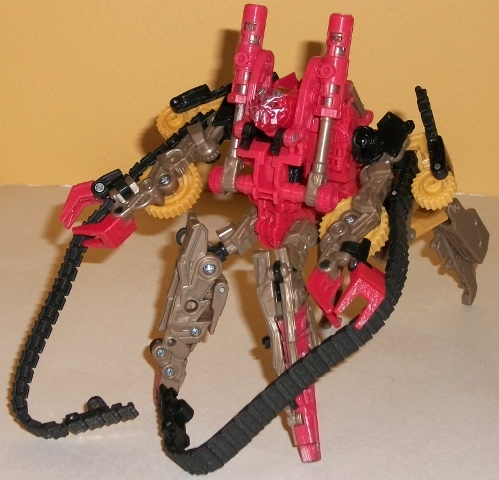

Allegiance : Autobot
Size : Deluxe
Difficulty of Transformation : Medium
Color Scheme : Dull milky golden yellow, clear tinted plastic, dark muddy brown, and some black, very dark milky brown, white, and silver
Individual Rating: 8.3
Set Price
: ~$30 U.S.
Overall Rating
: 7.9
(NOTE: Because this set is composed of repaints,
this is not a full-blown review. This mainly covers any changes made to
the set and the color scheme, and merely compares it to the original versions
of these molds. For a review on the original Cannon Bumblebee mold, go
here
.
For a review on the original deluxe RotF Rampage, go
here
.
For a review on the original delxue RotF Ravage, go
here
.)
 Bumblebee
Bumblebee
Allegiance
: Autobot
Size
: Deluxe
Difficulty of Transformation
: Medium
Color Scheme
: Dull milky golden
yellow, clear tinted plastic, dark muddy brown, and some black, very dark
milky brown, white, and silver
Individual Rating:
8.3
This redeco of Bumblebee
is a bit of "worn, sand-weathered" kind. The yellow used is a bit duller
and blander of a shade than normal. The clear plastic-- rather than being
blue like in most releases of this mold-- is here a tinted smoky shade,
as it it's been partially obscured. The most obvious change is visible
in robot mode, where most of the "robot parts" are now colored dark brown.
This color doesn't outright clash with the yellow, of course, but it does
make Bumblebee look rather boring in comparison to most other versions
of this mold. The brown "mud/sand" paint sprayed on his robot arms and
some of the lower parts of his vehicle mode help to differentiate him a
bit more, though, and the added silver "scrape" marks definitely make it
look like he's got a battle on his hands with the Decepticons in this set.
However, the downside to these added "battle wear" paint apps are that
some of the toy's "staple" paint apps have been removed. The vehicle's
characteristic stripes are still there, along with the painted grill, but
some of the headlights are left unpainted, and the entire rear bumper (taillights,
license plate, etc.) is unpainted. A few places on his robot mode that
are usually painted-- like his waist-- are fairly bereft of paint, as well.
No mold changes have
been made to this version of Bumblebee, though he does have the same "mask
down" head sculpt that
Battlefield Bumblebee
has.
 Rampage
Rampage

Allegiance:
Decepticon
Size
: Deluxe
Difficulty of Transformation
: Hard
Color Scheme
: Orangish red, pale
milky brown, pale dull yellow, and some transparent yellow, silver, and
black
Individual Rating
: 7.6
Like the other toys in
this set, Rampage also has a bit of a "worn, sandy" look to him. He still
retains the movie-accurate main color of orangish red, but instead of just
adding a few extra paint apps or varying the shade of color a little, Rampage
has a considerably more varied color scheme this time around. The addition
of dull yellow and a milky, muddy brown-- mostly on his shovel and hinges
in vehicle mode, but on some other parts as well-- really keeps him from
looking a bit boring like the previous releases of this mold, and provides
some decent contrast. There's also some nice "dirt" spray paint apps near
the bottom of his shovel, and some nice "worn metal" silver spray paint
apps on the back end of the vehicle mode, as well as on the face. It particularly
looks awesome on the face, highlighting all that wonderful mold detailing
with "edges of worn metal", similar to how he looked in the movie.
No mold changes have
been made to this version of Rampage.
 Ravage
Ravage
Allegiance
: Decepticon
Size
: Deluxe
Difficulty of Transformation
: Very
Easy
Color Scheme
: Gunmetal gray, pale
milky brown, silver, light milky greenish gray, and some transparent light
red, glossy coppery brown, black, pale dull yellow, and light red
Individual Rating
: 7.8
This version of Ravage
also has the "battle-worn, sandy" look this him to fit in with the desert
battle theme, and it's executed EXTRAORDINARY well on this guy. Although
pretty much every one of his colors are different than on the original
toy, it still looks very much like that same toy but with the aforementioned
sand and damage effects applied to it. The gunmetal gray is a VERY nice
shade of plastic that serves as the backdrop for most of the other colors.
The pale milky brown gives him more of that "dirty" look, though it doesn't
provide a whole lot in the way of contrast. What's really fantastic about
this figure are all the spray paint apps everywhere-- silver "worn metal"
on his face and hind legs, a nice brownish-copper spray on his underside,
extra silver paint apps on his front legs to simulate metal where the paint
has worn off-- it's all marvelously done. With the exception of the tail,
no real section of Ravage is left unpainted, with some of his staple paint
apps like the silve ron his back and hips there, as well as some new paint
apps like the nice silver and red on his guns, the yellow on his "wings"
in reentry mode, and painted teeth. Just about the only complaint I have
about Ravage's color scheme here-- and it's a rather minor one-- is that
the bits of light greenish gray dont look all that gray.
No mold changes have
been made to this version of Ravage.
The "Rampage Among the Ruins" set is a mixed bag, trending towards the positive side of things. Both Rampage and Ravage have some really great, wonderful paint apps and are easily the best color schemes those molds have gotten to date. Bumblebee fits in with the same "desert battle" theme that the Decepticons in this pack share, but switching in all that brown and making his yellow so much duller doesn't really make him nearly as eye-catching as the other two. If you don't have any previous molds of Rampage and Ravage, this set is a definite pickup. If you have more than just Bumblebee out of the molds of this set, though, it's probably worth skipping despite the cool "desert battle" paint apps, simply because none of the color schemes on the toys in this set are radically different from the originals'.
Reviews by Beastbot